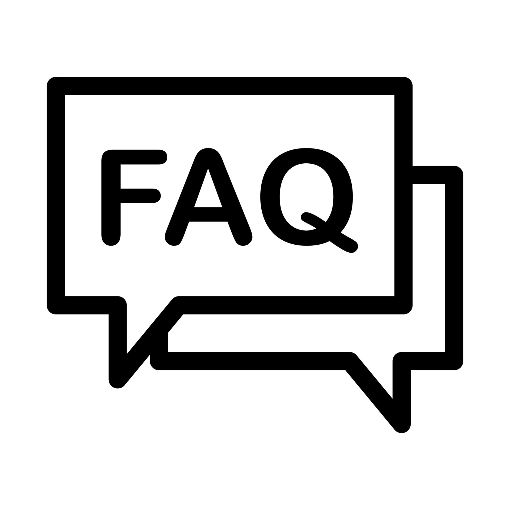

Frequently Asked Questions (FAQ)
General Questions
What is The Training Hub? +
The Training Hub is a premier sports training center offering courses in swimming, soccer, rugby, basketball, volleyball, and baseball. We cater to all skill levels and provide pathways for individuals to become professional athletes.
Where is The Training Hub located? +
The Training Hub is located at 322 Sentinnel Rd. Toronto ON, conveniently accessible by public transport and with ample parking facilities.
What sports courses are available at The Training Hub? +
We offer courses in: Swimming, Soccer, Rugby, Basketball, Volleyball, Baseball.
Who can enroll in courses at The Training Hub? +
Our courses are open to people of all ages and skill levels, from beginners to aspiring professionals.
What are the operating hours of The Training Hub? +
We are open from 6:00 AM to 10:00 PM, Monday through Sunday.
What facilities are available at The Training Hub? +
We have state-of-the-art facilities, including swimming pools, soccer fields, basketball courts, rugby pitches, volleyball courts, and baseball fields. Our facilities also include gym areas, locker rooms, and a sports café.
Registration and Plans
How do I register for a course? +
You can register for a course online via our website or in-person at our reception. Choose your desired plan (Basic, Advanced, or Premium), and fill out the registration form.
What are the differences between the Basic, Advanced, and Premium plans? +
- Basic Plan: Covers foundational skills and techniques.
- Advanced Plan: Includes more in-depth training and skill development.
- Premium Plan: Provides comprehensive training, including personalized coaching and access to professional-level facilities.
What is the cost of each plan? +
- Basic Plan: $50 per month
- Advanced Plan: $750 per month
- Premium Plan: $100 per month
Are there any discounts or promotions available? +
Yes, we offer seasonal discounts and promotions. Please check our website or contact us for current offers.
Can I switch between plans after registration? +
Yes, you can upgrade or downgrade your plan at any time. Contact our support team to make changes to your plan.
Is there a trial period available? +
Yes, we offer a one-week trial for new members to experience our facilities and training sessions.
What is the cancellation policy? +
You can cancel your membership at any time. Refunds are provided based on the terms outlined in our cancellation policy.
Training and Facilities
Do you provide training for competitive sports? +
Yes, we offer training programs that prepare individuals for competitive and professional levels in various sports.
Are there any prerequisites for joining the courses? +
No prior experience is necessary for our Basic Plan. However, the Advanced and Premium Plans may have some prerequisites or require an assessment to determine the appropriate level.
Do you offer group training sessions? +
Yes, we provide both individual and group training sessions. Group sessions are a great way to train with friends or teammates.
How are training sessions scheduled? +
Training sessions are scheduled throughout the day. You can book sessions based on your availability through our online portal or at the reception desk.
Do you provide equipment for the courses? +
Yes, basic equipment is provided for all courses. However, we recommend that advanced and premium members bring their own specialized gear.
Are private training sessions available? +
Yes, we offer private training sessions for an additional fee. Contact our reception to schedule a session.
Membership and Benefits
What are the benefits of becoming a member at The Training Hub? +
Members enjoy access to high-quality training, professional coaching, state-of-the-art facilities, and a supportive sports community. Premium members also get personalized training plans and nutrition advice.
Can I bring a guest to The Training Hub? +
Yes, members can bring guests for a small fee. Premium members have complimentary guest passes.
Are there any social or networking events for members? +
Yes, we regularly host events, workshops, and seminars for members to learn, network, and socialize.
Is there a members’ app available? +
Yes, our members can use The Training Hub app to manage their bookings, track their progress, and access exclusive content.
What safety measures are in place at The Training Hub? +
We prioritize safety with regular equipment checks, trained staff on-site, first aid facilities, and adherence to COVID-19 guidelines.
How can I contact The Training Hub for more information? +
For more information or specific inquiries, please contact us at +1 333 444 555 or visit our website.